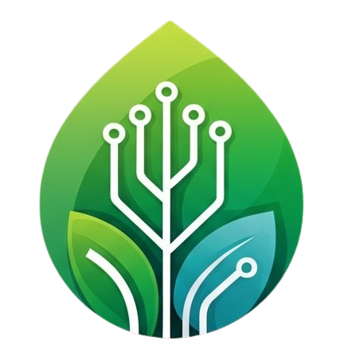

SMART GARDEN
Sistem Penyiraman Otomatis Berbasis IoT

Kelompok 3(4E)
Arif Alfian Choirul Anwar (23670119)
Kelvin Bintang Ardiansyah (23670148)
Alivia Nuraida (23670132)
Siti Muawanah (23670099)
Dosen Pembimbing:
Noora Qotrun Nada, S.T., M.Eng
Internet of Things
MASUK KE MONITOR